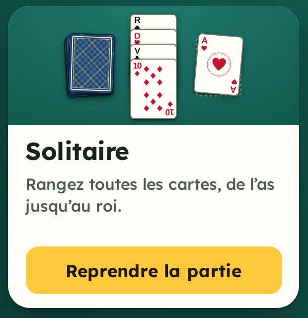

Garder le lien du jeu
- Ouvrez le jeu lui-même, par exemple le solitaire ou le jeu des paires.
- Dans le navigateur, ajoutez la page aux favoris. Sur ordinateur, cherchez l’étoile de la barre d’adresse.
- Choisissez un nom facile à reconnaître, par exemple « Mon solitaire ». Ouvrez le favori pour vérifier qu’il mène au jeu.
Revenir sur le même navigateur
Jeux de Papi garde la progression dans le navigateur de l’appareil utilisé. Quand vous revenez dans la bibliothèque, la fiche d’un jeu en cours indique Reprendre la partie. Vous pouvez aussi ouvrir directement le favori du jeu.

Si vous ne voyez plus la partie, vérifiez d’abord que vous êtes sur le même appareil et dans le même navigateur. Une partie ne suit pas automatiquement un changement de navigateur ou d’appareil. Effacer les données du site peut aussi supprimer la sauvegarde.
Faire le trajet avec un proche
Laissez la personne ouvrir elle-même le favori, faire un premier coup, puis revenir à la bibliothèque. Demandez-lui ensuite de retrouver la partie. Si elle hésite, changez le nom du favori ou placez-le à un endroit qu’elle consulte déjà.
Si ce sont les cartes ou les lettres qui gênent, voyez comment régler la taille du jeu.